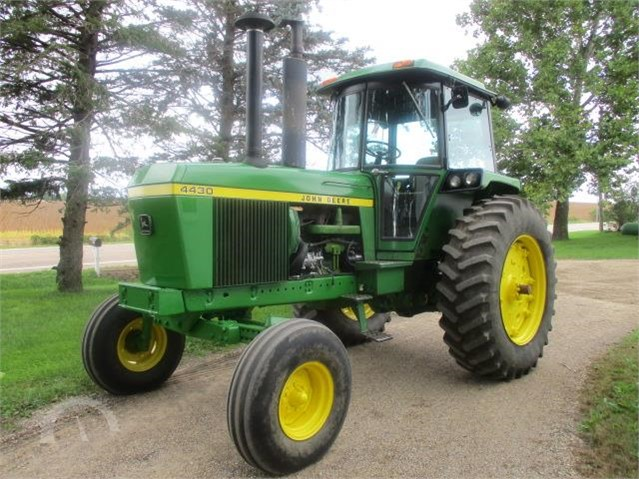

Tractors

Open Google in a new tab.
Open youtube in this tab.
This is a placeholder link, goes no where, for now.
How to start a 4430 in the cold.
- remove driver's side screen behind fuel tank.
- unscrew nut holding cover on air filter.
- spray ether into air filter for 2 seconds.
- replace cover and screen.
- push throttle to halfway open.
- press clutch, turn key
Tractors I Like!
- JD 4430
- JD 6420
- International 1466
- JD 6250R
Checking out the new JOHN DEERE 6250R!